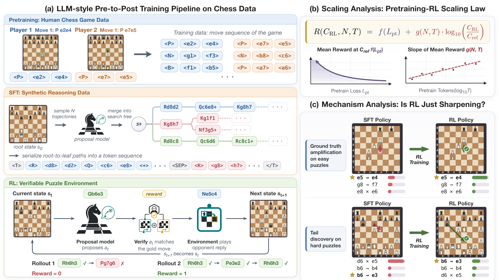
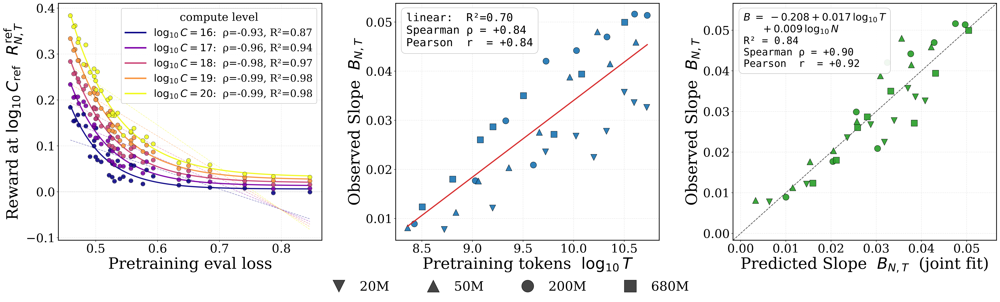
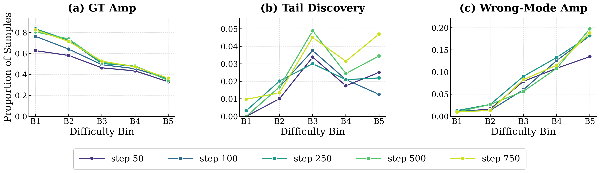
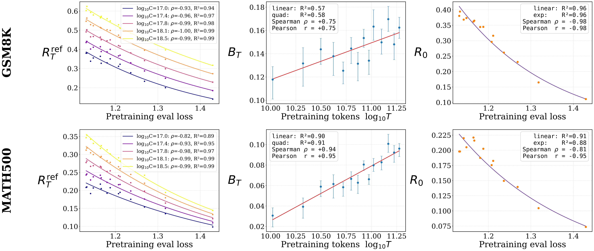

核心判断
Shen 等人把十种棋类 Transformer、十一档预训练预算、四种 RL 模型规模和 36 条预训练—RL 组合曲线放进同一个受控试验台。最可信的新证据是：更低的预训练损失关联更高的 RL 后性能，而更多的预训练 token 又关联更陡的局部 RL 学习斜率。这让“先预训练多少、再强化多少”从静态预算切分，变成一个耦合优化问题。
起点由预训练决定
参考 RL 预算下的性能与预训练损失高度单调相关；随着参考预算增大，相关强度由约 0.93 上升到 0.99。
速度也由预训练决定
局部 RL 斜率与预训练 token 数的相关系数约为 0.84。相同 RL 算力，底座训练经历不同，回报并不相同。
发现伴随放错
RL 能把低概率正确棋步推入 top-3，也会把错误主模态进一步放大；困难题上后者明显多于前者。
它真正要回答的问题
常见 scaling law 把预训练写成模型规模 (N)、token 数 (T) 与损失 (L) 的关系；常见后训练论文则从一个固定底座出发，比较算法、奖励或推理预算。两类研究之间缺了一层：当底座本身变化时，RL 的学习曲线怎样变？
如果 RL 只是把既有分布统一锐化，那么更好的预训练主要提高初始性能，未必提高学习斜率；如果 RL 能可靠发现尾部正确行为，那么预训练覆盖、训练时长和题目难度都应改变它的收益。作者因此需要同时控制三种变量：
棋类是一个刻意选择的中间层：状态、合法动作和解题真值可由引擎验证，训练成本又远低于通用语言模型；但它仍包含组合搜索、多步承诺和失败恢复。因此它适合做机制实验，却不能自动代表开放域语言推理。
受控试验台：从 54B 棋谱 token 到可验证 RL

1. 预训练：规模与数据预算同时展开
每一步棋被编码为四个 token：棋子、起点、终点与特殊标志，词表仅 81。作者从 2022 年 Lichess Blitz / Rapid 棋谱构造 54B-token 语料，并按平均 Elo 800–3000 做平衡采样。十个稠密 Qwen3 风格模型覆盖 5M 到 1B 参数；十一档预算约从 (6.5\times10^{16}) 到 (6.5\times10^{19}) FLOPs，对应约 2 亿到 520 亿训练 token。
2. SFT：先生成搜索树，再训练模型提交答案
42K 道棋题不是只配最终答案。固定的 200M proposal model 从局面采样多个续着，把重合前缀合成树，再按深度优先顺序序列化为显式 reasoning trace；Stockfish 选择最佳延续，模型最后提交答案。这里的“思维链”因此更像候选生成与比较过程，而不是人类自然语言解释。消融显示，无轨迹 SFT 主要改善 pass@1；带轨迹 SFT 才同时改善 pass@8 与 pass@16。
3. RL：奖励极简，搜索困难真实存在
69.3K 道训练题中，70% 来自较容易的 B1/B2，30% 来自 B3–B5。GRPO 每组采样 8 个回答；只有完整走对目标序列才得 1 分，否则为 0。论文配置给出学习率 (10^{-5})、KL 系数 0.001、clip 0.2、温度 1.0 与最长 3072 response tokens。这个奖励消除了模糊裁判，却没有消除探索失败：策略若从未采到正确路径，就没有梯度告诉它正确答案在哪里。
4. 测试：同时看精确率与覆盖
独立 benchmark 有 1,480 道题，按难度分为 B1–B5。聚合结果主要用 B1–B4，因为模型几乎解不出 B5；B5 被保留用来观察机制。pass@1 衡量单次成功率，pass@16 更接近多次采样后的覆盖。训练、测试和预训练棋局在标准化棋盘状态层面去重，降低了直接记忆泄漏的可能。
联合 scaling law：不是一条万能直线
作者先在每一条 RL 曲线的非饱和局部，把奖励近似为 log-RL-compute 的一次函数：
再用预训练损失 (L_{\mathrm{pt}}(N,T)) 预测参考预算下的性能，用规模和 token 数预测 RL 斜率：

| 验证方式 | RMSE | MAE | 中位 per-run (R^2) | 应如何理解 |
|---|---|---|---|---|
| 使用实测预训练损失，逐点留一 | 0.0102 | 0.0078 | 0.65 | 在已观察模型与预算附近，局部插值较准。 |
| 先用 Chinchilla 形式预测损失，再留一 | 0.0194 | 0.0153 | -0.86 | 误差翻近一倍；平坦曲线使 (R^2) 尤其不稳定。 |
| 整种模型规模留出 | 0.0242 | — | — | 跨规模外推更难；留出 680M 时 RMSE 达 0.048。 |
这组结果说明公式更像局部响应面，而不是跨域定律。它对“已有实验网格内怎样分配下一批算力”有用，对“另一个模型家族应该投多少 RL”证据不足。
20%–28%：一个条件化的预算答案
作者还拟合预训练损失面：
把损失面与 RL 响应面合并，在固定总算力下搜索预训练和 RL 的最优切分。实验网格中的 20M 模型，经验最优 RL 份额随总预算由约 5% 上升到 32%；拟合后的全局 frontier 则从 50M 模型约 20% 上升到 680M 约 28%。
另一个容易被平均分掩盖的结果是 pass@1 与 pass@16 分叉：RL 明显提高 pass@1，却让较大模型的 pass@16 大致持平或略降。也就是说，策略更会把概率压到少数高回报答案上，但候选多样性未同步增加。若部署场景允许 best-of-N、搜索或多样本验证，仅优化 pass@1 可能牺牲后续搜索空间。
RL 到底改变了什么：锐化、尾部发现与错误锁定
作者对每道题采样 128 条 reasoning traces，估计第一步棋的边际策略。先检验一个最简单假设：RL 只是对所有状态施加同一个温度，把 SFT 分布做幂次锐化。750 步时最佳全局指数约为 1.35，但统一锐化只能解释约 17% 的策略变化；即便改用中心化 logit 线性模型，整体 (R^2) 也只有约 0.56。不同状态的变化显著异质。

“发现”是概率意义，不是能力从无到有
这里的 tail discovery 有严格操作定义：正确动作在 SFT 分布中已有非零但低于 5% 的估计概率，后来进入 top-3。它证明 RL 能救回罕见正确行为，没有证明正确算法在底座中严格不存在。有限采样也无法区分极小概率与真零概率。与受控组合任务中“重组已学会的原子函数”、或在 pass@K=0 任务族上观察 grokking 的工作相比，本论文给出的命题更窄，但也更可量化。
思维链变宽，不一定变深
训练后，reasoning tree 的分支数和宽度增加，最大深度大致持平或略降；候选棋步质量与最终承诺改善，但深度优先遍历的一致性下降、重复访问增多，长程恢复能力仍弱。它更像在学习“提出并选择更好的候选”，而不是稳定获得更深的规划算法。这也解释了为何短程 pass@1 能快速进步，而高难度长路径仍是瓶颈。
数学迁移实验：方向一致，证据等级更低
作者用一条约 1B 非 embedding 参数的 OLMo-2 预训练轨迹做自然语言核验。从约 10.5B 到 200B token 取 15 个锚点，每个锚点再做固定 5B-token annealing、约 859K 条 NuminaMath-CoT SFT，然后在约 24.9K 道 GSM8K / MATH / DeepScaler 混合题上运行最多 3,000 步 GRPO。结果仍显示：更晚的预训练 checkpoint 有更好的 post-RL 水平与更快的局部收益。

因此它是跨域可迁移性的提示，不是独立 scaling law 复现。更晚 checkpoint 共享同一训练祖先，误差并不独立；固定规模也无法识别 (N) 与 (T) 的交互。论文正文对 checkpoint 数量还有轻微口径差异：方法描述称 14 个，公开模型集合列出 15 个锚点。这个差异不改变方向判断，但提示完整实验台账仍有整理空间。
开放与复现审计：构件齐全，整篇复现链不闭合
| 发布物 | 公开状态 | 能验证什么 | 仍缺什么 |
|---|---|---|---|
| 54B-token 棋谱数据 | 公开，约 215GB | 预训练语料结构与规模 | 大规模下载与训练成本高 |
| 棋题 benchmark / 训练数据 | 公开 | 样本字段、难度与题目数量 | 平台当前显示约 229K 行，和论文过滤后 156K 池的版本映射不够清楚 |
| 预训练与 SFT 权重 | 公开 | 多个规模和 checkpoint 的基础行为 | 集合中未见棋类 RL 权重 |
| 棋类训练代码 | 公开 | tokenizer、SFT trace、二值奖励和 GRPO 构件 | 缺完整 36-run 配方、scaling/frontier 拟合脚本和对应测量表 |
| 数学模型权重 | 公开 15 条 pretrain→anneal→SFT→RL 链 | 检查 checkpoint 组织和最终权重 | 数学训练脚本、优化器状态与完整日志未发布 |
当前公开启动配置与论文还存在几处实际偏差：标为 8-GPU 的脚本只暴露四张 GPU，却配置每节点使用八张；默认 response 上限为 2560，而论文写 3072；公开 sweep 默认仅五个配置、500 步，论文联合分析则使用 36 个组合和 1,000–5,000 步。仓库也没有直接生成主 scaling law 与算力 frontier 的脚本和完整测量数据。
论文的边界：哪些结论暂时不能外推
- 局部线性不等于全程规律。 RL 曲线只在未饱和区间近似线性，极低预算的探索冷启动和高预算的饱和都可能改变形状。
- 单一验证器任务偏向可判定推理。 棋题有精确答案和廉价引擎，开放式研究、写作、代码架构等任务的奖励噪声与多解性更强。
- 错误模态风险没有被预算公式单独惩罚。 pass@1 提升可与 pass@16 覆盖下降并存；只优化均值可能得到更自信、但更窄的策略。
- 数学实验不足以识别跨规模规律。 它来自同一预训练 run 的 checkpoint，没有跨模型规模和多 seed。
- 算力只是成本的一部分。 数据构造、引擎验证、采样吞吐、失败样本和推理时 best-of-N 都会改变真实系统成本。
- 预训练损失并非普适充分统计量。 在同域棋谱内它预测力很强；换数据分布、任务覆盖或模型家族后，相同 loss 可能对应完全不同的高质量回答覆盖。
独立推论：把“能力”拆成覆盖、可训练性与选择
1. 预训练的后训练价值不只体现在最终 loss
两个底座即使 loss 接近，只要训练 token、数据顺序或覆盖不同，RL 斜率也可能不同。论文中 slope 与 (T) 的额外关系提示：模型可能在继续训练中形成更平滑、可被奖励优化的表示。实际评估不应只选“当前 benchmark 最强”的底座，还应做短程 RL probe，估计单位算力增益和错误模态率。
2. Coverage 是必要条件，训练动力学决定能否取出
Coverage Principle 强调高质量回答需要在底座分布中有足够概率质量；本论文补上了动力学视角：覆盖存在并不意味着 RL 会稳定找到它。困难 B5 中 tail discovery 非零，但错误模态放大更多。覆盖决定“有没有可搜索对象”，奖励、采样与优化器决定“能否把它取出来”。
3. 最优预算应是带风险约束的 Pareto front
只最大化 pass@1 会遗漏覆盖、多样性和错误自信。更合理的预算前沿至少同时报告 pass@1、pass@K、错误模态放大率、每题采样成本与跨分布稳健性。对于能使用搜索或 verifier 的系统，保留候选覆盖可能比进一步锐化单次答案更值钱。
4. “RL 创造能力”需要更强的实验定义
要证明从无到有，至少需要预先定义原子技能或组合族，证明底座在大规模采样与诊断下对目标族无成功覆盖，再显示 RL 在控制数据泄漏后获得可泛化解法。本文的 5% tail 定义诚实且有用，但它回答的是低概率行为迁移，不是本体论上的能力创造。
研究者应记录
每条底座的 loss、token、数据来源、短程 RL slope、pass@K、策略熵与错误模态变化，而不是只保留最终 checkpoint。
工程团队应先做
在少量代表性底座上运行等预算 probe，拟合局部响应面；只在可观测区域内决策，并为分布外任务保留独立验收。
证据边界与资料索引
全文结论以论文 v1、附录、官方代码、数据与模型发布物为主；相关论文只用于比较命题边界，不把二手报道当实验事实。大型训练未独立重跑，因此性能数字均按发布方报告陈述。
主材料与官方资产
- Understanding Reasoning from Pretraining to Post-Training：论文摘要、PDF 与版本信息。
- pre2post-chess：棋类预训练、SFT、RL 与策略分析代码。
- Pre-to-Post Chess Collection：数据、预训练模型、SFT 模型与相关发布物集合。
- Chess Pretraining Dataset、Chess Puzzle Benchmark、Post-training Datasets。
- Pre-to-Post OLMo Math Models：数学迁移实验的模型链。
用于校准“发现、覆盖与预算”的一手研究
- Does Reinforcement Learning Really Incentivize Reasoning Capacity in LLMs Beyond the Base Model?：RLVR 小 (k) 改善与大 (k) 覆盖边界。
- Can RL Learn New Reasoning Skills?：受控原子函数与未见组合。
- The RL Grokking Recipe：在受控代码任务中研究 pass@K=0 家族和 grokking 条件。
- The Coverage Principle：高质量回答概率质量与后训练、测试时扩展的关系。
- The Interplay of Pre-Training, Mid-Training, and RL on Reasoning：底座 headroom、数据阶段与 RL 收益。
- Front-Loading Reasoning：把多样推理模式提前注入预训练和 SFT 的路线。